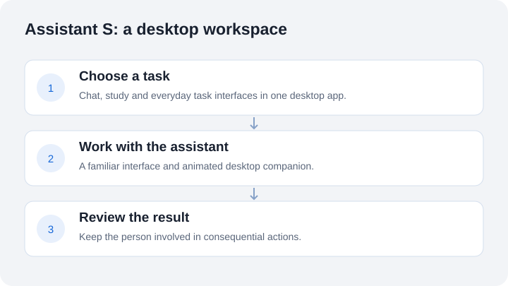

Salem Elatrash / Assistant S
Assistant S
A desktop assistant with an animated companion and a workspace for chat, study and everyday tasks.

Inspect the engineering
Project evidence
JavaScript state handling, with selected source code, a runnable example and tests.
The selected function derives working, offline, waiting and error states from supplied task data. The recorded output uses mock tasks, providers and dialogue.
No personal account connections or conversations are included. These checks cover the selected function, not the full desktop application.
What I wanted to build
A personal desktop workspace that feels more approachable than a collection of disconnected tools. Assistant S combines a character-driven interface with practical screens for different kinds of work.
What I built
An Electron application with JavaScript modules, a local service and an animated 2D companion. The interface includes chat, study, tasks and settings. The character gives the app continuity while the task screens provide the useful part.

Engineering focus
Desktop packaging, a modular interface, clear connection states and deliberate user review for consequential actions. Combining these pieces has also meant working through device setup and differences between development and a packaged application.
Current status
A private personal software project, with a Windows packaged build checked in October 2026. It is not presented as a publicly available service. Account connections and device-specific setup vary.
What this demonstrates
Building and packaging a desktop application, connecting multiple interface areas, designing a consistent visual character and documenting the boundary between a working feature and a setup requirement. AI coding assistance was used during development.
This overview deliberately omits private conversations, account details, personal documents, internal paths and service configuration. Only the selected source example described above is public. The room screenshot contains no private application data. The public example uses synthetic inputs.